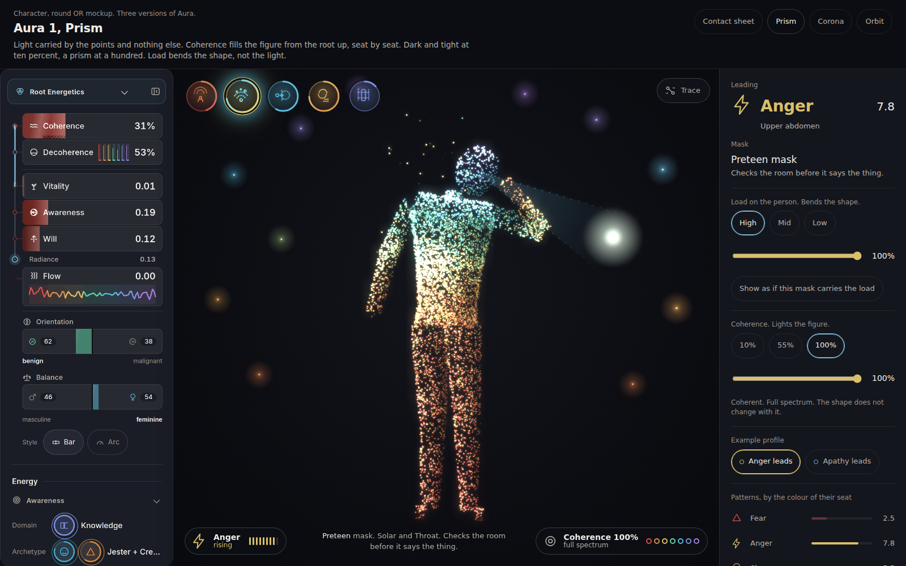
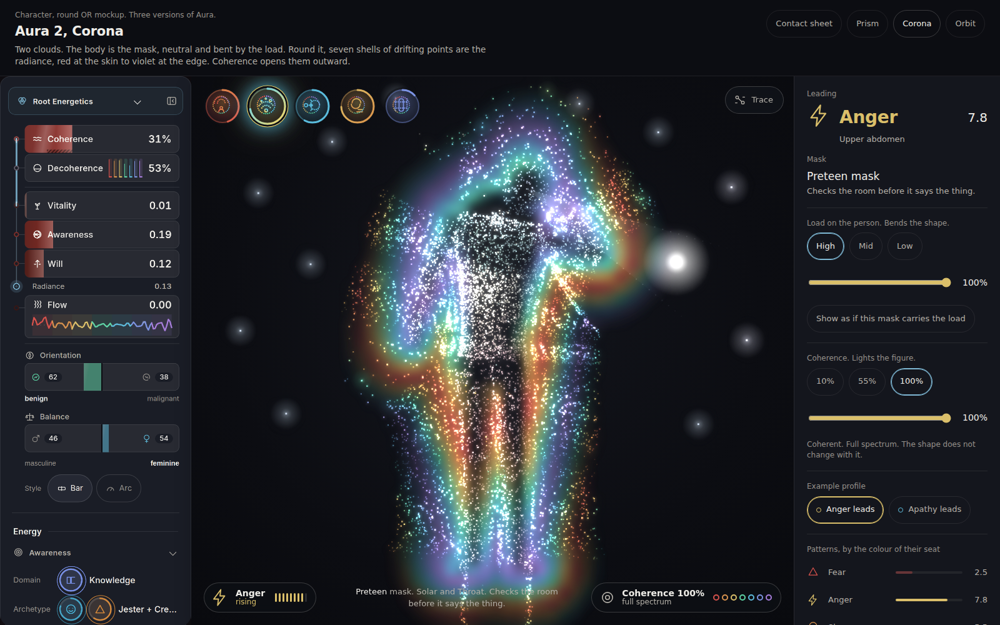
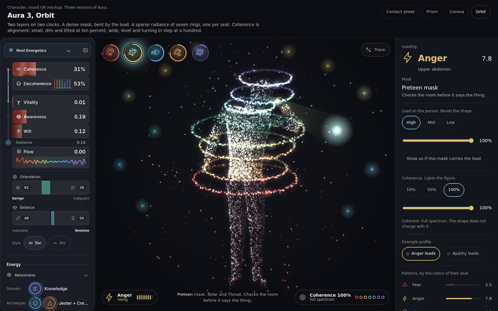
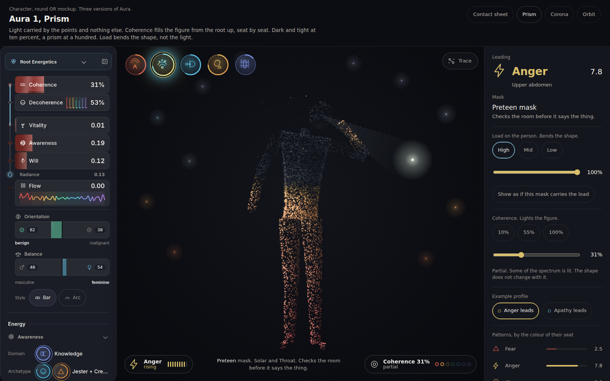
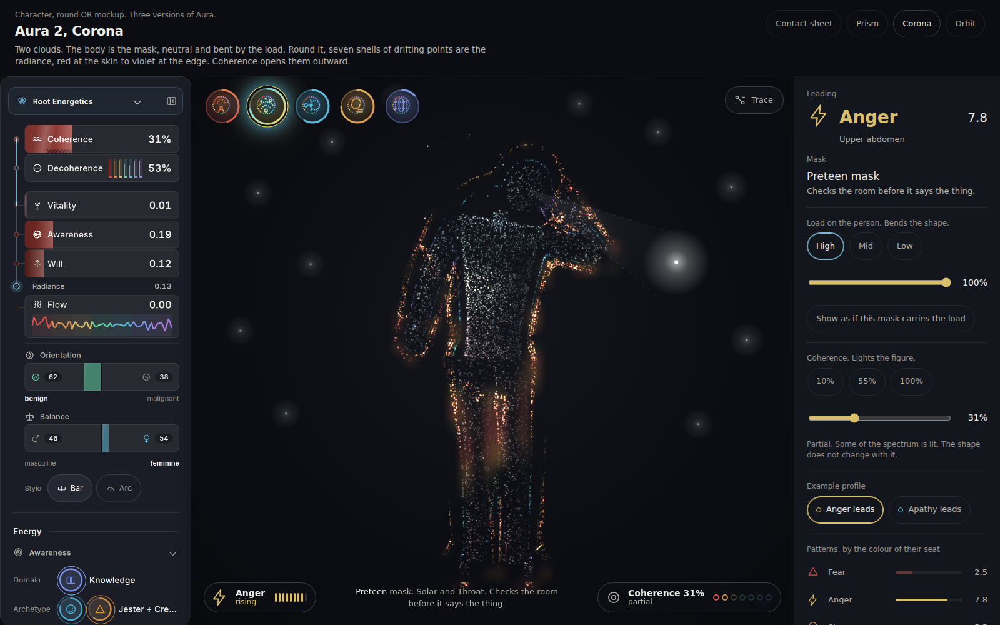
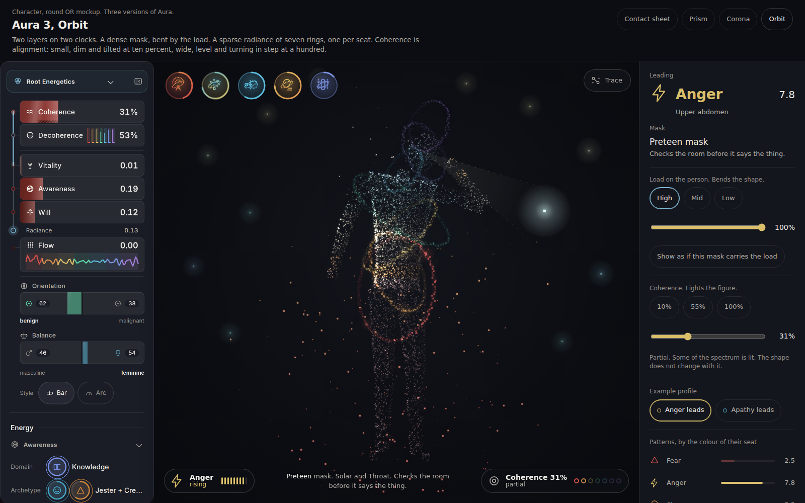

Aura, three more versions, with the light on
You picked Aura, the point cloud person, because the cloud can be the mask and the light round it can be the radiance. These are three ways of doing that. In all three there are five masks (Child, Preteen, Teen, Adult, Ideological), two things move independently, and nothing is tied to a row of the left menu.
The weights decide how far each mask bends the body from a plain calm person. Low load is the plain person in every mask. The leading patterns decide which way it bends.
Compressed, at 0 percent, is no light: a tight dark cloud. At 100 percent it is full spectrum: the seven seat colours, red to violet, in the product's own palette. The middle is in between. The shape does not change with it.
The alarm colour is not used anywhere in these. Low coherence is dark, not wrong.
The three, and the old Aura, side by side
The same state in each: anger leading, Preteen mask, high load, coherence 100 percent. Each page opens already in motion.

Old Aura
Pattern colour by place, brightness is load. No coherence. Shown for comparison.

Aura 1, Prism
Light in the points only. Fills the figure root to crown. A prism of hues in every point.

Aura 2, Corona
A neutral mask cloud inside a field of drifting points and iridescent light that wraps the bent body.

Aura 3, Orbit
A dense mask layer, and a sparse layer of seven rings, one per seat, on their own clock.
| Aura 1, Prism | Aura 2, Corona | Aura 3, Orbit | |
|---|---|---|---|
| Where the light lives | In the colour and brightness of the body's own points. Nothing else is added. | In a second cloud round the body, seven shells of drifting points over a soft spectral glow. The body is neutral. | In a sparse layer of seven orbiting rings, with their own motion, over a dense mask layer. |
| What coherence does | Fills. Light climbs the seats from root to crown. At 55 percent the head is still dark. | Opens. The field widens outward and more of the spectrum is let in. At 55 percent the warm half and green show, the blues and violet do not. | Aligns. Rings go from small, dim and tilted every way to wide, level and turning in step, comets lined up. |
| At 10 percent | A tight, dim grey cloud with a few red sparks at the feet. | A tight dim cloud with a faint rim against the skin. | A tight dim cloud with small crumpled rings that hug the body. |
| Read at a glance | A figure that is lit from the ground up. Simplest. Closest to the old Aura. | An aura photograph. The most luminous. Loudest. | A stack of seven coloured halos. The most symbolic: the seats are countable. |
Beside the left menu
The page at 1600 by 1000 with the built app's own left menu at the left, a screenshot of the real rail on the Tomas example profile. The rail is not redrawn and not changed, and nothing is drawn between it and the page. Tomas reads 31 percent coherence in the rail, so the first picture of each version is lit to 31 percent, which is the honest pairing. The second is the same page at 100 percent.

Aura 1, Prism, 31 percent

Aura 2, Corona, 31 percent

Aura 3, Orbit, 31 percent
The pictures link to the live pages. Add ?rail=0 to the address to hide the rail strip.
The coherence ladder, and both axes
One mask (Preteen). Across: coherence 10, 55 and 100 percent. Down: load high, then low. Read across a row and only the light changes. Read down a column and only the shape changes.
The coherence 10 percent pictures are meant to be nearly dark. They are dim on purpose, and the shape is still there if you look for it.
All five masks
Each sheet has two blocks. First, coherence 10, 55 and 100 percent for every mask at high load. Second, load high, mid and low for every mask at full coherence. Adult is new: the upper half of the body slides off the lower one at the waist so the join shows, a line of points marks the seam and pulses on its 4.2 second beat, one forearm is across the belly, and a file of ledger lines rises beside it. It is the mask that handles it and files what it cost.
The icon row, upper left
Five real buttons, 60 pixels on a desktop and 52 on a phone. Each has one new sign drawn in the cloud's own language, a ring for a body and dots for the points round it: Child small under a dotted mass, Preteen a head and a sweep of dotted arcs, Teen a small ring thrusting at a big dotted one, Adult a ring cut across and joined with a file under it, Ideological a tall rigid ring inside a dotted lattice. The colours are the mask's own seat colours from the design tokens, one gradient from its first seat to its last. Corona puts a ring of the seven seat colours round each sign and Orbit puts one tilted orbit through it. The arc is how loaded the mask is. None of them is linked to a row of the left menu.
Trace
Kept as it was. Press a region of the figure, or the Trace button, and every other pattern dims, a thread of points runs from that region to a card, and the card shows the chain the engine already holds: a story, supports, the pattern, worn under, the mask. Supports, not causes.
Motion, the first two seconds
Frames at 0, 0.5, 1 and 2 seconds from the moment the page opens, stage only. The cloud is already there at zero, a dim scatter gathering into the person while it bends into the mask, and the light comes up a beat after the shape. The light opens from compressed up to whatever the coherence is.
The same on a phone layout: Aura 1, Aura 2, Aura 3. After the opening the page keeps moving: points breathe, the mask keeps its own tempo, Corona's shells flow up the limbs, Orbit's rings turn, Prism's white band climbs the figure every five seconds.


On a phone, 390 wide
More phone pictures at 55 percent coherence: Aura 1, Aura 2, Aura 3.


What it costs per frame, in plain words
Every frame the page works out where each point is, which colour it takes and how bright it is, draws them, and then blurs the picture twice and lays it back over itself to make the glow. Measured here, on a Chromium that draws on the processor with no graphics card, so it is a harsh test: a laptop with a graphics card will do better. The honest result is that none of the three held 60 frames a second in this test. They are written for a card that does the drawing, which was not available to measure.
| What is drawn each frame | The point and colour work | Whole frame, this machine | Where the time goes | |
|---|---|---|---|---|
| Aura 1, Prism | 11,000 points on a desktop and 5,600 on a phone, counted into a few hundred colour batches. The world round the mask is a few hundred more marks. | about 4 ms | 7 to 15 ms on a desktop, about 6 ms on a phone | Mostly the glow. |
| Aura 2, Corona | 7,000 mask points, 8,400 field points, and a small map of how far every place is from the body (about 90 by 90 cells) turned into a soft coloured picture. The map is what lets the shells follow a bent body. | about 6 ms | 20 to 28 ms on a desktop, 17 ms on a phone | The glow and the soft picture. The heaviest of the three, and the first to thin out if a cheaper version is needed: drop the soft picture or halve the field points. |
| Aura 3, Orbit | 9,000 mask points, seven rings of 140 beads, 320 dust points and 14 comets with trails, plus seven thin ellipses under the beads. | about 4 ms | 8 to 19 ms on a desktop, 10 ms on a phone | Mostly the glow. |
The glow is refreshed every other frame in the live pages, because it is a blur and a one frame lag cannot be seen. The numbers move a lot from run to run on this machine, so read them as ranges. A person who has asked their system for less motion gets the settled picture, held still.
Open Aura 1Open Aura 2Open Aura 3Sheet, Aura 1Sheet, Aura 2Sheet, Aura 3The earlier three systems